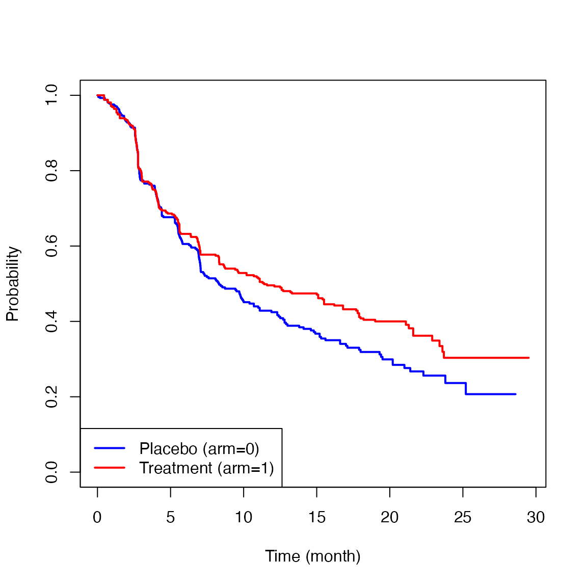
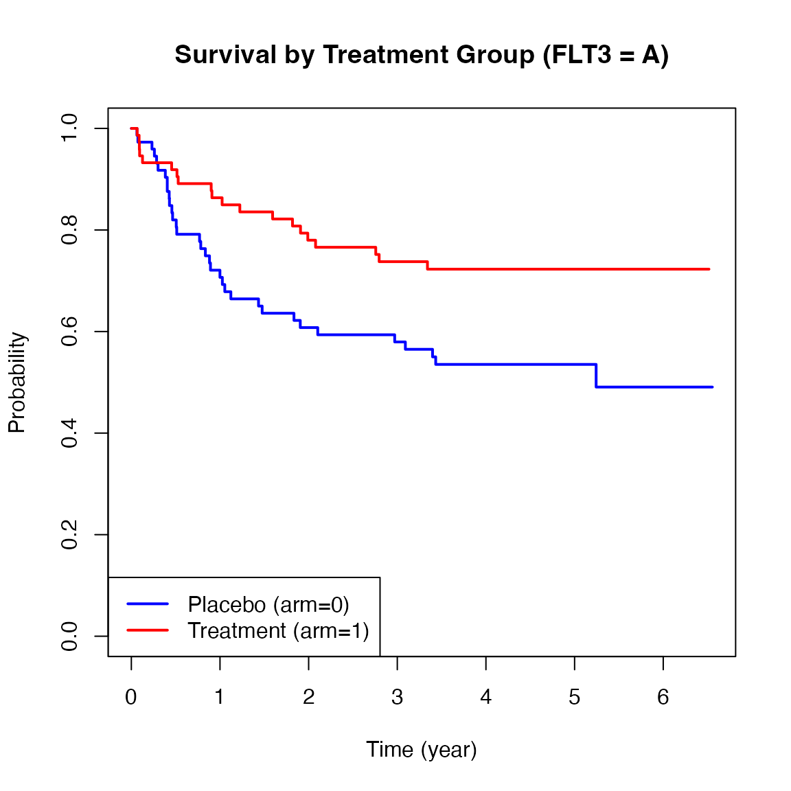
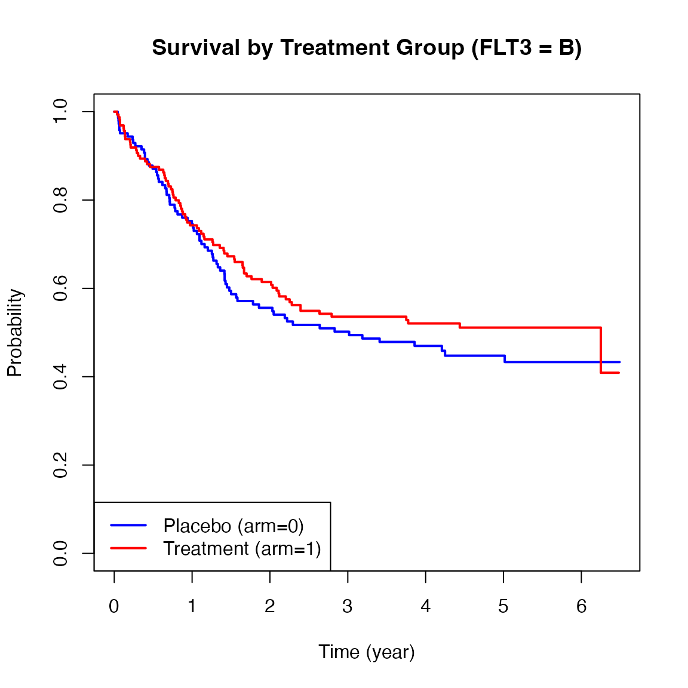
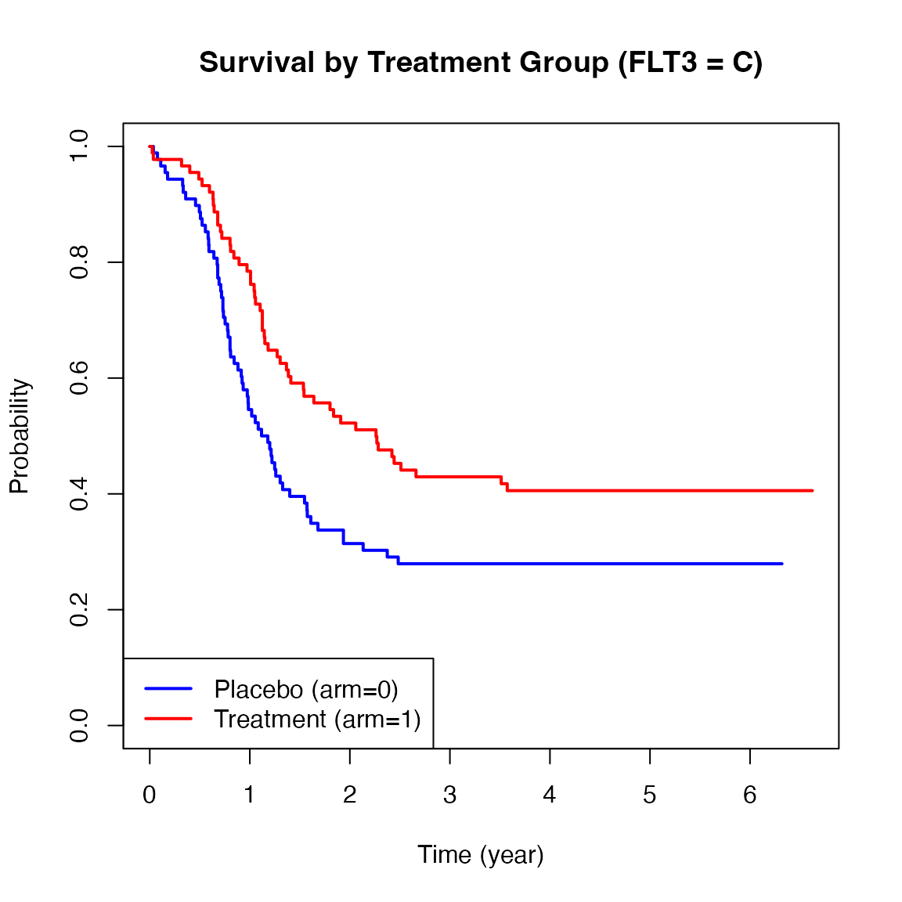
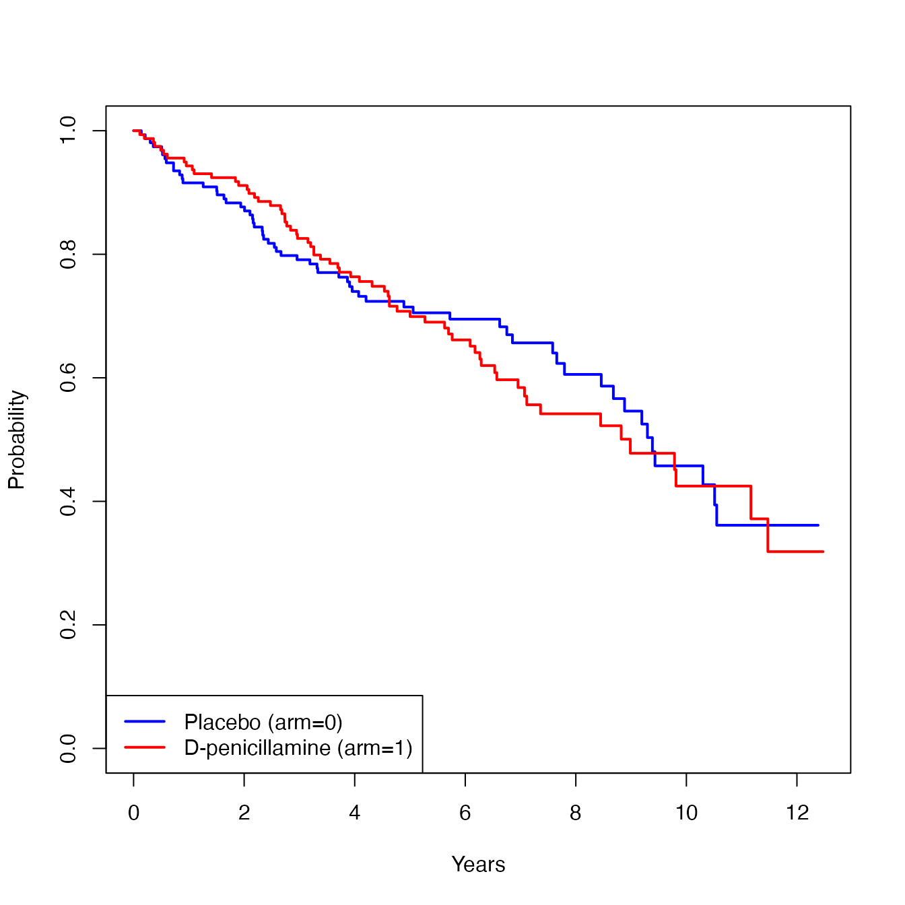

Vignette for survAH package
Hajime Uno1, Miki Horiguchi2, Zihan Qian3
December 1, 2025
vignette-survAH.Rmd1 Introduction
An important objective of clinical research investigating the safety and efficacy of a new intervention is to provide quantitative information about the intervention effect on clinical outcomes. Such quantitative information is critical for informed treatment decision making to balance the risks and benefits of the new intervention. In those studies where time-to-event outcomes are clinical endpoints of interest, the traditional Cox’s hazard ratio (HR) has been used for estimating and reporting the treatment effect magnitude for many decades. However, this traditional approach may not have provided the sufficient quantitative information that is needed for informed decision making in clinical practice for the following reasons. First, this approach does not require calculating the absolute hazard in each group in order to calculate the HR, which is a desirable feature from a statistical point of view, but which makes the clinical interpretation difficult. From the clinical point of view, the two numbers from the treatment and control groups are necessary for interpreting a between-group contrast measure (e.g., difference or ratio). Second, if the proportional hazards assumption is not correct, the interpretation of HR is not obvious because it is affected by the underlying study-specific censoring time distribution.[1,2]
The average hazard with survival weight (AHSW), which can be interpreted as the general censoring-free incidence rate (CFIR), is a summary measure of the event time distribution and does not depend on the underlying study-specific censoring time distribution. The approach using AHSW (or CFIR) provides two numbers from the treatment and control groups and allows us to summarize the treatment effect magnitude in both absolute and relative terms, which would enhance the clinical interpretation of the treatment effect on time-to-event outcomes.[3,4,5,6]
This vignette is a supplemental documentation for the survAH package and illustrates how to use the functions in the package to compare two groups with respect to the AHSW (or CFIR). The package was made and tested on R version 4.5.2.
2 Installation
Open the R or RStudio applications. Then, copy and paste either of the following scripts to the command line.
To install the package from the CRAN:
install.packages("survAH")To install the development version:
install.packages("devtools") #-- if the devtools package has not been installed
devtools::install_github("uno1lab/survAH")2 Sample Reconstructed Data
We use sample reconstructed data of the CheckMate214 study reported by Motzer et al. [7]. The data consists of 847 patients with previously untreated clear-cell advanced renal-cell carcinoma; 425 for the nivolumab plus ipilimumab group (treatment) and 422 for the sunitinib group (control).
The sample reconstructed data of the CheckMate214 study is available on survAH package as cm214_pfs. To load the data, copy and paste the following scripts to the command line.
library(survAH)
nrow(cm214_pfs)
#> [1] 847
head(cm214_pfs)
#> time status arm
#> 1 0.451 1 1
#> 2 0.451 1 1
#> 3 0.451 1 1
#> 4 0.451 1 1
#> 5 0.451 1 1
#> 6 0.710 1 1Here, time is months from the registration to progression-free survival (PFS), status is the indicator of the event (1: event, 0: censor), and arm is the treatment assignment indicator (1: Treatment group, 0: Control group).
Below are the Kaplan-Meier estimates for the PFS for each treatment group.

The two survival curves showed similar trajectories up to six months, but after that, a difference appeared between the two groups. This is the so-called delayed difference pattern often seen in immunotherapy trials. The HR based on the traditional Cox’s method was 0.82 (0.95CI: 0.68 to 0.99, p-value=0.037). Since the validity of the proportional hazards assumption was not clear in this study, there is no clear interpretation on the reported HR. Even if the proportional hazards assumption seemed to be reasonable, the lack of a group-specific absolute value regarding hazard makes the clinical interpretation of the treatment effect difficult. For example, if the baseline absolute hazard is very low, the reported HR (0.82) may indicate a clinically ignorable treatment effect magnitude. If it is high, even an HR that is closer to 1 (e.g., 0.98) may indicate a clinically significant treatment effect magnitude.
3 Average Hazard with Survival Weight (AHSW)
For a given a general form of the average hazard (AH) is denoted by where and are the hazard function for the event time and a non-negative weight function, respectively. Let be the survival function for We use as the weight, which gives the AHSW The detailed motivation for using as was discussed in Uno and Horiguchi (2023) [3]. The AHSW has a clear interpretation as the average person-time incidence rate on a given time window It can also be called as the general censoring-free incidence rate (CFIR) in contrast to the conventional person-time incidence rate that potentially depends on an underlying study-specific censoring time distribution.
From now on, we simply call the AHSW (or CFIR) the average hazard (AH). The AH is denoted by the ratio of cumulative incidence probability and restricted mean survival time at :
Let
denote the Kaplan-Meier estimator for
A natural estimator for
is then given by
The large sample properties and a standard error formula of
are given in Uno and Horiguchi (2023) [3].
4 Two-sample comparison using AH and its implementation
Let and denote the AH for treatment group 1 and 0, respectively. Now, we compare the two survival curves, using the AH. Specifically, we consider the following two measures to capture the between-group contrast:
- Difference in AH (DAH)
- Ratio of AH (RAH)
These are estimated by simply replacing and by their empirical counterparts (i.e., and , respectively). For the inference of the ratio type metrics, we use the delta method to calculate the standard error. Specifically, we consider and and calculate the standard error of log-AH. We then calculate a confidence interval for the log-ratio of AH, and transform it back to the original ratio scale; the detailed formula is given in Uno and Horiguchi (2023) [3].
The procedures below show how to use the function, ah2, to implement these analyses.
time = cm214_pfs$time
status = cm214_pfs$status
arm = cm214_pfs$arm
ah2(time=time, status=status, arm=arm, tau=21)The first argument (time) is the time-to-event vector variable. The second argument (status) is also a vector variable with the same length as time, each of the elements takes either 1 (if event) or 0 (if no event). The third argument (arm) is a vector variable to indicate the assigned treatment of each subject; the elements of this vector take either 1 (if the active treatment arm) or 0 (if the control arm). The fourth argument (tau) is a scalar value to specify the truncation time point for the AH calculation.
When is not specified in ah2, (i.e., when the code looks like below)
ah2(time, status, arm)the default (i.e., the maximum time point where the size of risk set for both groups remains at least 10) is used to calculate the AH. It is best to confirm that the size of the risk set is large enough at the specified in each group to make sure the Kaplan-Meier estimates are stable.
The ah2 function returns AH on each group and the results of the between-group contrast measures listed above. Note that we chose 21 months for in this example.
obj = ah2(time, status, arm, tau=21)
print(obj, digits=3)
#>
#> The time window: [eta, tau] = [0, 21] was specified.
#>
#> Number of observations:
#> Total N Event by tau Censor by tau At risk at tau
#> arm0 422 225 163 34
#> arm1 425 219 160 46
#>
#>
#> Average Hazard (AH) by arm:
#> Est. Lower 0.95 Upper 0.95
#> AH (arm0) 0.066 0.057 0.076
#> AH (arm1) 0.049 0.042 0.057
#>
#>
#> Between-group contrast:
#> Est. Lower 0.95 Upper 0.95 P-value
#> Ratio of AH (arm1/arm0) 0.747 0.608 0.917 0.005
#> Difference of AH (arm1-arm0) -0.017 -0.029 -0.005 0.006The estimated AHs were 0.049 (0.95CI: 0.042 to 0.057) and 0.066 (0.95CI: 0.057 to 0.076) for the treatment group and the control group, respectively. The ratio and difference of AH were 0.747 (0.95CI: 0.608 to 0.917, p-value=0.005) and -0.017 (0.95CI: -0.029 to -0.005, p-value=0.006), respectively.
5 Stratified analysis using the AH and its implementation
Stratified analysis is commonly used in clinical trials to adjust for imbalanced baseline characteristics or known prognostic factors. However, traditional stratified methods (e.g., Stratified Cox or CMH) assume homogeneous effects across strata, which may not hold in practice. To overcome this, we extend the AH framework to stratified settings using standardization [4]. This approach adjusts for stratification while preserving the interpretability of both absolute and relative treatment effects.
In this framework, treatment effects are summarized using the adjusted average hazard (AH), which is defined based on standardized survival curves across strata:
where denotes survival function for group in stratum , and is aset of weights that satisfies for strata. In this version of the package, is set to be the proportion of subjects in stratum i.e., , where is the number of subjects in stratum in the group and is the total number of subjects in the group
Using this, the adjusted AH for group is defined as
We estimate by replacing survival functions with Kaplan–Meier estimators
To compare two groups, we use the following contrast measures: Difference in AH (DAH) is defined as
and Ratio of AH (RAH) is defined as
Their estimators are
We also illustrate how to perform stratified analysis using the AH with the myeloid dataset from the survival package. This dataset simulates a randomized trial in acute myeloid leukemia and includes a stratification factor based on mutations of the FLT3 gene (levels A, B, C), which is known to affect prognosis [8].
nrow(myeloid)
#> [1] 646
head(myeloid)
#> id trt sex flt3 futime death txtime crtime rltime
#> 1 1 B f C 235 1 NA 44 113
#> 2 2 A m B 286 1 200 NA NA
#> 3 3 A f A 1983 0 NA 38 NA
#> 4 4 B f A 2137 0 245 25 NA
#> 5 5 B f C 326 1 112 56 200
#> 6 6 B f C 2041 0 102 NA NA
# Create new analysis variables:
# - arm_num: binary treatment indicator (1 = arm B [treatment], 0 = arm A [control])
# - time_yr: follow-up time converted from days to years
myeloid$arm_num <- ifelse(myeloid$trt == "B", 1, 0)
myeloid$time_yr <- myeloid$futime / 365.25This data frame contains 646 observations and 9 variables. For the current analysis, we focus on the following key variables: futime, which represents the time to death or last follow-up; death, a censoring indicator where 1 denotes death and 0 indicates censoring; trt, the treatment variable with two levels, arm A and arm B; and flt3, which represents the mutation burden of the FLT3 gene, categorized as levels A, B, and C, and be used as a stratification factor in our following analysis.
Below are Kaplan-Meier plots of survival stratified by FLT3 mutation levels (A, B, C). These curves suggest potential heterogeneity in treatment effects across strata.



We now apply the ah2() function from the
survAH package to conduct a stratified AH analysis with
FLT3 mutation levels as the stratification factor.
myel_time = myeloid$time_yr
myel_status = myeloid$death
myel_arm <- ifelse(myeloid$trt == "B", 1, 0) # Convert treatment variable to binary: 1 = treatment (arm B), 0 = control (arm A)
myel_strata = myeloid$flt3
ah2(time = myel_time,
status = myel_status,
arm = myel_arm,
tau = 3,
strata = myel_strata)We set to 3 (years). Compared to the previous sections, the other arguments remain the same, but we now introduce a new argument strata to perform a stratified analysis. The strata argument allows us to specify a categorical variable that defines the strata for the analysis. In this case, we use the FLT3 mutation levels as the stratification factor. The function will then report results from both unstratified and stratified analyses.
myel_obj <- ah2(time = myel_time,
status = myel_status,
arm = myel_arm,
tau = 3,
strata = myel_strata)
print(myel_obj,digit = 3)
#>
#> The time window: [eta, tau] = [0, 3] was specified.
#>
#> Number of observations:
#> total arm0 arm1
#> strata1 149 74 75
#> strata2 319 154 165
#> strata3 178 89 89
#> total 646 317 329
#>
#>
#> Total N Event by tau Censor by tau At risk at tau
#> arm0 317 160 28 129
#> arm1 329 142 18 169
#>
#>
#> <Unstratified analysis> Average Hazard (AH) by arm:
#> Est. Lower 0.95 Upper 0.95
#> AH (arm0) 0.290 0.245 0.343
#> AH (arm1) 0.207 0.175 0.246
#>
#>
#> <Unstratified analysis> Between-group contrast:
#> Est. Lower 0.95 Upper 0.95 P-value
#> Ratio of AH (arm1/arm0) 0.715 0.563 0.910 0.006
#> Difference of AH (arm1-arm0) -0.082 -0.143 -0.022 0.007
#>
#>
#> <Stratified analysis> Average Hazard (AH) by arm:
#> Est. Lower 0.95 (orginal scale) Upper 0.95 (orginal scale)
#> AH (arm0) 0.286 0.235 0.337
#> AH (arm1) 0.207 0.170 0.243
#> Lower 0.95 (based on log scale) Upper 0.95 (based on log scale)
#> AH (arm0) 0.239 0.342
#> AH (arm1) 0.173 0.247
#>
#>
#> <Stratified analysis> Between-group contrast:
#> Est. Lower 0.95 Upper 0.95 P-value
#> Ratio of AH (arm1/arm0) 0.723 0.562 0.930 0.011
#> Difference of AH (arm1-arm0) -0.079 -0.142 -0.016 0.013As shown in the ah2 results above, in the unstratified analysis, the estimated AHs were 0.290 (95% CI: 0.245 to 0.343) for the control group and 0.207 (95% CI: 0.175 to 0.246) for the treatment group. The estimated RAH was 0.715 (95% CI: 0.563 to 0.910, p = 0.006), and the DAH was -0.082 (95% CI: -0.143 to -0.022, p = 0.007). In the stratified analysis, which adjusts for FLT3 mutation subgroups, the AHs were 0.286 (95% CI: 0.235 to 0.337) for the control group and 0.207 (95% CI: 0.170 to 0.243) for the treatment group. The RAH was 0.723 (95% CI: 0.562 to 0.930, p = 0.011), and the DAH was -0.079 (95% CI: -0.142 to -0.016, p = 0.013).
6 Regression analysis for AH and its implementation
Sections 4 and 5 focused on two-sample comparisons of AH, with or without stratification. In clinical research, however, regression models are frequently used to adjust for confounding factors, investigate prognostic variables, and develop risk prediction models for patient outcomes. Motivated by these needs, Uno et al. (2024) [6] proposed a regression analysis framework for AH at a pre-specified truncation time .
The AH regression framework is a general regression modeling approach for assessing the association between model covariates and the outcome. In the two-group setting considered previously, it can be used to perform between-group comparisons while adjusting for multiple covariates that may be associated with the outcome. This framework allows the treatment effect to be summarized in both absolute (difference in AH) and relative (ratio of AH) terms, along with the group-specific AH values, while simultaneously adjusting for important baseline characteristics, thereby improving the likelihood that the magnitude of the treatment effect is correctly interpreted in clinical settings.
The ahreg function can handle three kinds of censoring mechanisms:
-
Independent censoring
-
Group-specific censoring
- Covariate-dependent censoring
Let denote the AH at time for an individual with covariate vector . The ahreg function fits a regression model of the form where is a link function.
The current implementation supports the following link functions:
-
log link:
(default),
- identity link: .
Under the log link, represents the ratio of AH (RAH) associated with a one-unit increase in covariate , adjusted for other covariates. Under the identity link, represents the difference in AH associated with a one-unit increase in , adjusted for other covariates. Further methodological details and the large-sample properties of the estimator are described in Uno et al. (2024) [6].
6.1 Example data
We illustrate the use of ahreg with a subset of the pbc dataset from the survival package. The original dataset includes 418 patients, comprising both randomized and non-randomized cases. For this vignette, we use the 312 patients who participated in the randomized clinical trial (158 assigned to D-penicillamine and 154 to placebo). The survAH package provides the helper function ahreg.sample.data(), which extracts and prepares the analysis dataset for illustrating examples of AH regression analysis.
D = ahreg.sample.data()
nrow(D)
#> [1] 312
head(D)
#> time status arm age edema bili albumin protime
#> 1 1.095140 1 1 58.76523 1.0 14.5 2.60 12.2
#> 2 12.320329 0 1 56.44627 0.0 1.1 4.14 10.6
#> 3 2.770705 1 1 70.07255 0.5 1.4 3.48 12.0
#> 4 5.270363 1 1 54.74059 0.5 1.8 2.54 10.3
#> 5 4.117728 0 0 38.10541 0.0 3.4 3.53 10.9
#> 6 6.852841 1 0 66.25873 0.0 0.8 3.98 11.0Here, time is years from registration to death or last known alive; status is the event indicator (1 = death, 0 = censored); and arm is the treatment assignment indicator (1 = D-penicillamine, 0 = placebo).
For baseline covariates, the dataset includes age (years), edema (0 = no edema, 0.5 = untreated or successfully treated, 1 = edema despite diuretic therapy), bili (serum bilirubin in mg/dl), albumin (serum albumin in g/dl), and protime (standardized blood clotting time).
Below is the KM estimate of time to death by treatment group.

In the following subsections (6.2, 6.3, and 6.4), we illustrate how to implement AH regression for each of the three censoring mechanisms, using the log link, as the link function. Section 6.5 illustrates the case of using the identity link .
6.2 AH regression under independent censoring
The first example is the application of ahreg under independent censoring assumption. Because the default values of cens_strata and cens_covs are NULL, the AH regression can be implemented in the following simple specification:
The key arguments are:
-
formula: a survival formula with the response
Surv(time, status)on the left of a~operator and covariates on the right.
-
tau: the truncation time
at which AH is defined and estimated.
-
data: a data frame containing variables referenced
in the formula.
-
link: the link function to be used, either
"log"or"identity"(default ="log").
-
conf.int: the confidence level for constructing
confidence intervals (default =
0.95).
The output provides coefficient estimates, standard errors, confidence intervals, -values, and two-sided p-values for each predictor.
print(a1, digits=3)
#> Call: ahreg()
#>
#> [1] "Link: log"
#> Surv(time, status) ~ arm + edema + bili
#>
#> Est SE low_0.95 upp_0.95 Z p
#> Intercept -3.413 0.203 -3.811 -3.015 -16.805 0.000
#> arm 0.297 0.217 -0.129 0.723 1.366 0.172
#> edema 1.389 0.357 0.690 2.087 3.895 0.000
#> bili 0.115 0.016 0.083 0.147 7.055 0.000In this example, the estimated coefficient for arm is . Under the log link, exponentiating this value yields the ratio of AH:
This result can be summarized as:
The adjusted ratio of AH was 1.34 (95% CI: 0.88, 2.06; p-value=0.172).
This indicates that, on average, the treatment group experienced a 34% higher incidence rate of death than the placebo group over 7 years of follow-up, after adjusting for edema and bili.
6.3 AH regression with group-specific censoring
Next, we consider the AH regression under a group-specific censoring scenario. Suppose the underlying censoring distribution differs across treatment groups. This situation may arise, for example, when follow-up schedules or discontinuation patterns vary by treatment arm.
We use the cens_strata argument to specify the variable that is associated with censoring time. This option instructs ahreg to estimate the censoring distribution separately within each specified group, enabling valid AH estimation and regression even when censoring behavior differs across treatment groups. In the present case, the code is as follows:
While we used the treatment group (i.e., arm) in this example, any variable that defines groups with potentially different censoring distributions can be assigned to cens_strata. Note that cens_strata accepts only one variable. Thus, if several variables (e.g., arm and sex) are thought to influence censoring, one needs to create a new variable combining them and then specify this combined variable in cens_strata. When many variables are associated with censoring, or when a continuous variable is involved, a different approach is preferable (see Section 6.4).
As before, exponentiated coefficients under the log link yield the ratio of AH, now adjusted for group-specific censoring mechanisms.
print(a2, digits = 3)
#> Call: ahreg()
#>
#> [1] "Link: log"
#> Surv(time, status) ~ arm + edema + bili
#>
#> Est SE low_0.95 upp_0.95 Z p
#> Intercept -3.406 0.207 -3.813 -3.000 -16.443 0.000
#> arm 0.278 0.229 -0.171 0.728 1.214 0.225
#> edema 1.392 0.358 0.690 2.093 3.890 0.000
#> bili 0.115 0.016 0.083 0.147 7.044 0.0006.4 AH regression with covariate-dependent censoring
Lastly, we consider AH regression under a covariate-dependent
censoring scenario. In this setting, a Cox model is fitted to
the censoring time to estimate the censoring distribution as a function
of the variables specified in cens_covs. This argument
accepts a vector of variable names (default = NULL). The
resulting regression estimates account for covariate-dependent
censoring, providing a more flexible approach when the censoring
mechanism is complex.
Suppose both arm and edema are associated with the censoring time. In this case, the code is as follows:
a3 <- ahreg(Surv(time, status) ~ arm + edema + bili,
tau = 7,
data = D,
cens_covs = c("arm", "edema"))
print(a3, digits = 3)
#> Call: ahreg()
#>
#> [1] "Link: log"
#> Surv(time, status) ~ arm + edema + bili
#>
#> Est SE low_0.95 upp_0.95 Z p
#> Intercept -3.407 0.214 -3.827 -2.987 -15.893 0.000
#> arm 0.300 0.234 -0.158 0.758 1.283 0.199
#> edema 1.470 0.398 0.689 2.250 3.692 0.000
#> bili 0.113 0.017 0.079 0.147 6.488 0.000Note that only one of cens_strata or
cens_covs can be specified in the ahreg
function.
6.5 AH regression with the identity link
The choice of link function determines how the regression
coefficients are interpreted. To model absolute differences in AH rather
than ratios, the identity link can be used by setting
link = "identity".
a4 <- ahreg(Surv(time, status) ~ arm + edema + bili,
tau = 7,
data = D,
cens_covs = c("arm", "edema"),
link = "identity")Under the identity link, each coefficient represents the absolute difference in AH associated with a one-unit increase in covariate .
print(a4, digits = 3)
#> Call: ahreg()
#>
#> [1] "Link: identity"
#> Surv(time, status) ~ arm + edema + bili
#>
#> Est SE low_0.95 upp_0.95 Z p
#> Intercept -0.001 0.012 -0.025 0.022 -0.115 0.909
#> arm 0.004 0.016 -0.027 0.036 0.275 0.783
#> edema 0.238 0.118 0.006 0.469 2.014 0.044
#> bili 0.026 0.005 0.017 0.035 5.492 0.000In this example, a coefficient of 0.004 for arm (95% CI: –0.027, 0.036; p-value=0.783) indicates that the AH in the treatment group is 0.004 units (death events per person-year) higher than in the placebo group at , after adjusting for edema and bili.
This specification is useful when the primary focus is on the absolute difference in AH.
7 Conclusions
As illustrated in this vignette, AH-based methods provide more robust and reliable quantitative summaries of time-to-event outcomes than the traditional Cox hazard ratio approach. We anticipate that the procedures implemented in the survAH package will help clinical researchers quantify treatment effects in a more transparent and interpretable manner, thereby supporting more informed decision making in clinical practice.
References
[1] Uno H, Claggett B, Tian L, et al. Moving beyond the hazard ratio in quantifying the between-group difference in survival analysis. J Clin Oncol. 2014 Aug 1;32(22):2380-5. doi: 10.1200/JCO.2014.55.2208. Epub 2014 Jun 30. PMID: 24982461; PMCID: PMC4105489.
[2] Horiguchi M, Hassett MJ, Uno H. How Do the Accrual Pattern and Follow-Up Duration Affect the Hazard Ratio Estimate When the Proportional Hazards Assumption Is Violated? Oncologist. 2019 Jul;24(7):867-871. doi: 10.1634/theoncologist.2018-0141. Epub 2018 Sep 10. PMID: 30201741; PMCID: PMC6656438.
[3] Uno H, Horiguchi M. Ratio and difference of average hazard with survival weight: New measures to quantify survival benefit of new therapy. Stat Med. 2023 Mar 30;42(7):936-952. doi: 10.1002/sim.9651. Epub 2023 Jan 5. PMID: 36604833.
[4] Qian Z, Tian L, Horiguchi M, Uno H. A Novel Stratified Analysis Method for Testing and Estimating Overall Treatment Effects on Time-To-Event Outcomes Using Average Hazard With Survival Weight. Stat Med. 2025 Mar 30;44(7):e70056. doi: 10.1002/sim.70056. PMID: 40213923.
[5] Horiguchi M, Tian L, Kehl KL, Uno H. Assessing delayed treatment benefits of immunotherapy using long-term average hazard: a novel test/estimation approach. Lifetime Data Anal. 2025 Oct;31(4):784-809. doi: 10.1007/s10985-025-09671-0. Epub 2025 Oct 14. PMID: 41085870; PMCID: PMC12586407.
[6] Uno H, Tian L, Horiguchi M, Hattori S, Kehl KL. Regression models for average hazard. Biometrics. 2024 Mar 27;80(2):ujae037. doi: 10.1093/biomtc/ujae037. PMID: 38771658; PMCID: PMC11107592.
[7] Motzer RJ, Tannir NM, McDermott DF, et al. Nivolumab plus Ipilimumab versus Sunitinib in Advanced Renal-Cell Carcinoma. N Engl J Med. 2018 Apr 5;378(14):1277-1290. doi: 10.1056/NEJMoa1712126. Epub 2018 Mar 21. PMID: 29562145; PMCID: PMC5972549.
[8] Le-Rademacher JG, Peterson RA, Therneau TM, Sanford BL, Stone RM, Mandrekar SJ. Application of multi-state models in cancer clinical trials. Clin Trials. 2018 Oct;15(5):489-498. doi: 10.1177/1740774518789098. Epub 2018 Jul 23. PMID: 30035644; PMCID: PMC6133743.